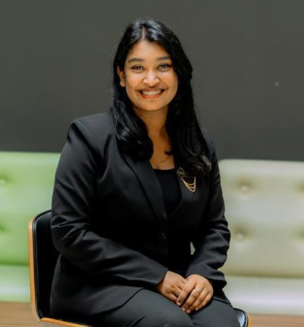
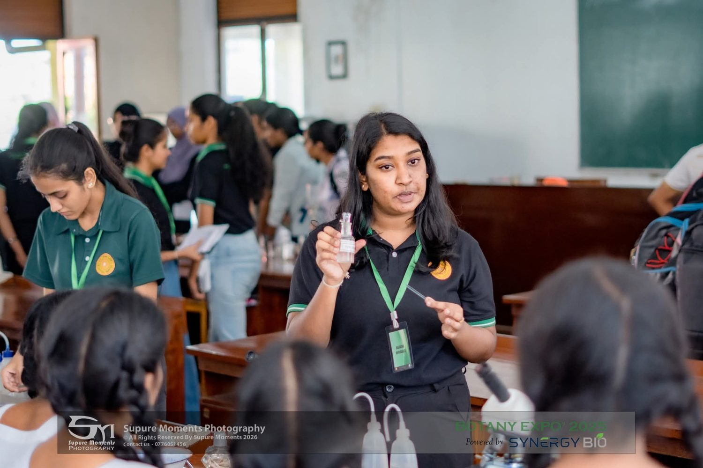
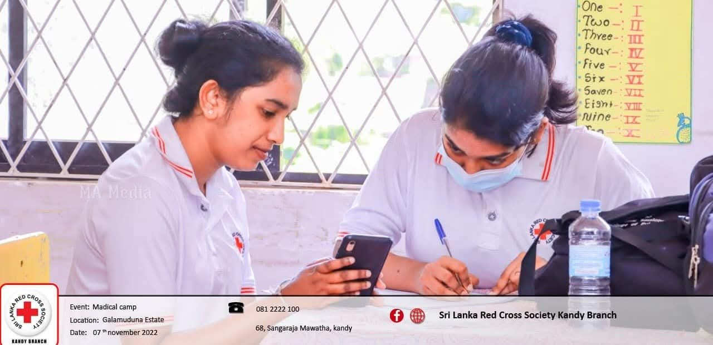
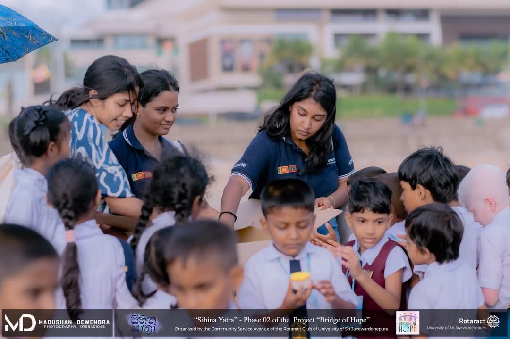

Faculty of Applied Sciences · University of Sri Jayewardenepura
Nelani Gunawardhana
B.Sc. (Hons) in Microbiology, Youth Leader, Natural Product Researcher, Computational Drug Discovery, and Community Empowerment.
Dedicated and analytical biosciences undergraduate with a strong academic record, combining wet-lab experimental research, computational bioinformatics, and molecular modeling with active leadership and community outreach.
- Microbiology
- Natural Product Chemistry
- Computational Biology
- Microbial Biotechnology
- Cancer Bioactivity
- DegreeB.Sc. (Honours) in Microbiology
- UniversityUniversity of Sri Jayewardenepura
- DepartmentDepartment of Botany
- LanguagesEnglish · Sinhala
- FellowshipYSALI — U.S. Department of State

3.84Current GPA
YSALIU.S. Dept. of State Fellow
Current GPA
3.84/ 4.00
B.Sc. (Hons) Microbiology · University of Sri Jayewardenepura
04.00
3.97GPA in Microbiology
4.0GPA in Zoology
GoldInteruniversity Biology Quiz 2024
In pictures
Moments from the journey
Research, leadership, fellowships and community service — a few highlights. Each photo opens its section.
 SpeakingInvited Panelist — Youth Forum Leadership Exchange Summit 2026
SpeakingInvited Panelist — Youth Forum Leadership Exchange Summit 2026 FellowshipYSALI Fellowship, USA
FellowshipYSALI Fellowship, USA
MentorshipMicrobiology techniques workshop
VolunteeringSri Lanka Red Cross — mobile medical camps
LeadershipRotaract — Sihina Yathra project OutreachYouth Forum Leadership Exchange Summit 2026
OutreachYouth Forum Leadership Exchange Summit 2026Portfolio
Explore the portfolio
Every section has its own page.
Academic Excellence
Science
Research Projects
Work Experience and Internships
Excellence in Co-curricular & Extracurricular
Fellowships
Awards
Mentorship
Vision
Contact
Selected as a YSALI Fellow
U.S. Department of State · University of Nebraska at Omaha · East West Center, May – June 2026.